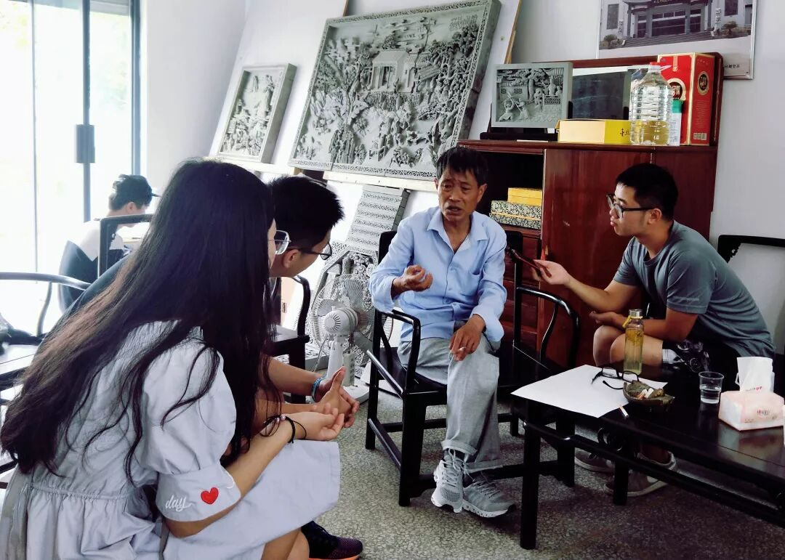
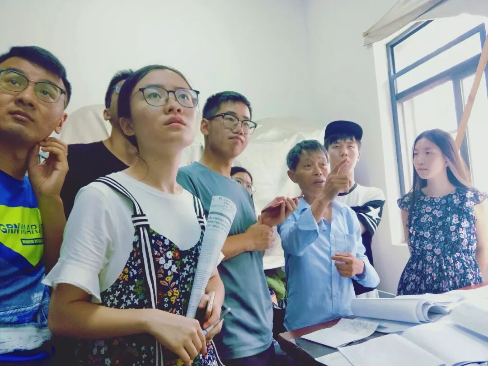
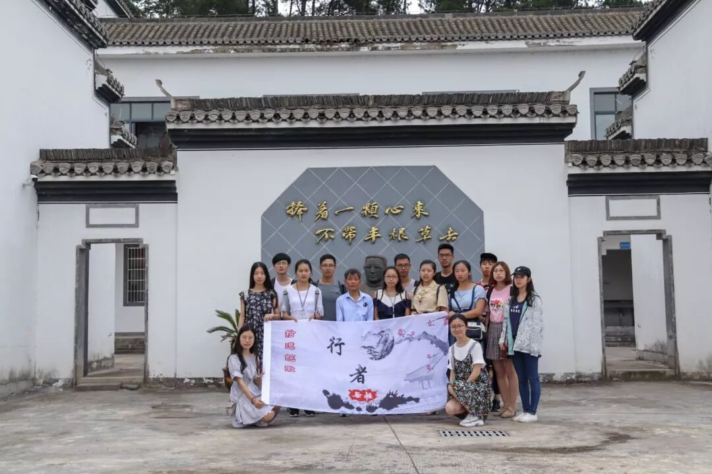

【行者无疆·拾遗皖徽】访大国工匠，品砖雕精魂

首站：新中砖雕厂
古青的色彩，精致的镂空，层次分明的脉络，行云流水式的底纹，惟妙惟肖的人物，砖雕以最接近生活的形式存在于徽州民居之中，高耸的屋顶之上，精美硕大而又寓意深刻的砖雕不仅是徽州人家身份的象征，更是祖祖辈辈对于家族子孙美好期许。
如今的徽州砖雕已鲜少巨大的房屋雕刻，多作为家居装饰的工艺品，不论砖雕如今以何种形式呈现在生活中，她的制作工艺永远是人类不朽的财富，永远是值得传承的非物质文化遗产，在行者酱的第五日行程中，行者团有幸采访到了一位国宝级的工匠大师方新中，一个严谨认真，一生坚守古艺的砖雕人。

采访过程中，方老先生年已古稀，但精神矍铄，满腔热忱不减当年。对我们的到来，方老表示欢迎，他说虽然每年都有很多人来拜访他，但是他都非常高兴，毕竟有这么多人想来了解这一项传统工艺是一件很好的事情。方老师从85年考入徽州古园林建设公司，从事了一辈子的砖雕艺术工作。文革时期许多珍贵的文物都遭受到了破坏，没有人去保护去修缮，但是人都是逼出来的，方老迎着自己的兴趣与社会的需求毅然决然投身砖雕领域，在自我摸索中恢复古法，创新技艺，探索出一条将砖雕推向现代的康庄大道。

减法
方老说，砖雕，要做减法，将不需要的砖料剔除，留下来的才是正真表现画面灵魂的部分。镂空艺术、层次艺术、用料工具、绘画艺术、雕刻技巧在方老师的口中娓娓道来，我们惊叹于老师巧夺天工的画面布局，更惊叹于老师对砖雕艺术深刻的理解。方老身为大国工匠仍保持着纯良的职业道德操守，不骄不躁，甚至保持着凌晨三点起床绘制模板样画的习惯，中国的传统技艺正是靠着许许多多像方老一样的老手艺人才得以传承和光大。

捧着一颗心来，不带半根草去
如同非遗研究中心门口这句陶行知先生的话一样，每一位非遗继承人都应心怀赤子之心，以最纯粹的情怀来对待自己一生坚守的古老技艺。一丝不苟砖雕艺，返璞归真非遗情，愿每一位砖雕人都能像方老这般热情专注，愿砖雕制作这项古老技艺在历史的洪流中光彩熠熠，永不褪色。
接续：徽州古城
徽州古城并不似想象中那般古老庄重，它掺杂了烟火气与现代文明，显得更加平易近人。我们拜访古城的这一天下起了淅淅沥沥的小雨，路上行人寥寥无几，我们便能更细致的探索这座古城。古城内小巷纵横，踏着撒满青苔的青石板，不由得令人想起那句“撑着油纸伞，独自彷徨在悠长悠长又寂寥的雨巷，我希望逢着一个丁香一样的，结着愁怨的姑娘”。马头墙伫立在道路两旁，几口古井上的绳痕揭示着老城曾经的辉煌。轻轻叩响身旁门上狮口的铜环，门中传出的犬吠给这这深巷增添了一分生气。我国唯一的一座八角牌坊伫立于此，它气势如宏，举世无双，四百多年的历史风霜使它看来是那么庄重。街上的徽式古筑里经营的是一家家现代化小店，漫步于此，既能采购到需要的食物和生活用品，也能享受古典建筑带来的视觉盛宴。
图片丨行者无疆实践团
文字丨李心悦 徐信步 杨宇晴
责编丨潘雯雯
审核丨潘雯雯
行者无疆实践团
QQ：2758025831

随行者一起认识世界
长按二维码关注